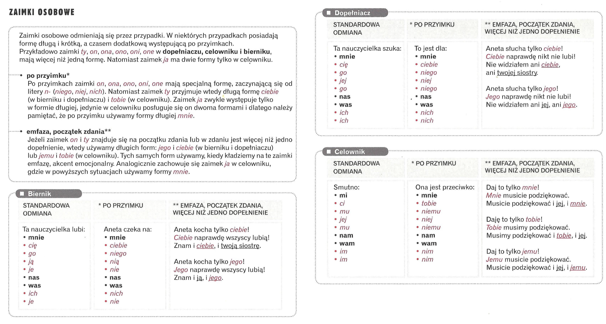

Gramatyka
Zaimek
Co to jest zaimek?
Zaimek to część mowy, która pozwala zastąpić rzeczownik, przymiotnik, przysłówek bądź liczebnik. Dzięki niemu unikamy powtórzeń w zdaniu bądź możemy wskazać lub określić coś bez dokładnego nazywania.
Nazwa zaimek pochodzi od „za imię” – zamiast podawać imię bądź nazwę danego obiektu, możemy powiedzieć po prostu: to, tamto, ktoś, coś, ona, on. Ważne jest, aby pamiętać, że użycie zaimka jest stosowne tylko wtedy, gdy odbiorca komunikatu wie, o co chodzi, bądź słowo, które zastępuje zaimek, zostało użyte w wypowiedzi wcześniej.

Zadania zaimków
Zadania zaimków są następujące:
- zastępowanie powtarzających się wyrazów (rzeczowników, przymiotników, liczebników i przysłówków),
- nazywanie obiektów, ich ilości i okoliczności wtedy, gdy nie wiadomo, jaka jest ich właściwa nazwa (np. ileś, kiedyś, to, tamto),
- skracanie wypowiedzi,
Najważniejsza funkcja zaimków to zastępowanie wyrazów tak, by uniknąć powtórzeń. Dzięki temu zdanie brzmi lepiej:
- Adam niedawno obejrzał dobry film. Adam obejrzał film z zaciekawieniem i pożyczył film koledze. Koledze film się nie spodobał.
- Adam niedawno obejrzał dobry film. Obejrzał go z zaciekawieniem i pożyczył koledze. Jemu się nie spodobał.
Podział zaimków
Zaimki zastępują tylko samodzielne części mowy – rzeczownik, przymiotnik, liczebnik i przysłówek . Wyróżniamy następujące ich typy:
- rzeczowne – zastępujące rzeczownik (np. ja, ty, my, wy, oni, kto, co, nic, coś, ktoś),
- przymiotne – zastępujące przymiotnik (
mój, twój, nasz, taki, który, inny, tamten, ta, ci ), - liczebne – zastępujące liczebnik (np. ile, tyle, kilka, ileś, ilekolwiek),
- przysłowne – zastępujące przysłówek (np. tak, tam, tu, wtedy, gdzieś, tamtędy, kiedyś).

Powyższy podział nie jest jedyny. Zaimki dzielimy również ze względu na to, jaką mają funkcję. Wówczas wyróżniamy wśród nich:
- soboweo (np. ja, ty, on, ona, ono, my, wy, oni, one),
- zwrotne (np. się, siebie, sobie),
- dzierżawcze (np. mój, twój, jego, jej, nasz, wasz, ich),
- wskazujące (np. ten, ta, to, tamten, tam, tu, ów, tędy, taki, ci, tamci, owi, sam),
- pytające (np. kto? co? jaki? który? gdzie? kiedy? jak? komu? czemu? kogo?),
- względne (np. kto, co, komu – bez znaku zapytania, służą do wprowadzania zdania podrzędnego, Ten, kto to zrobił),
- nieokreślone (np. ktoś, coś, jakiś, gdzieś, kiedyś, cokolwiek),
- przeczące (np. nic, nikt, żaden, nigdy, nigdzie),
- upowszechniające (np. wszyscy, zawsze).

Odmiana zaimków
Generalnie zaimki odmieniają się tak, jak zastępowane przez nie części mowy. W związku z tym zaimki przysłowne są nieodmienne.
- zaimki odmienne – odmieniają się przez przypadki, liczby i rodzaje:
- rzeczowne – zastępujące rzeczownik (np. ja, mnie, ty, tobie, my, nam, wy, was, oni, one, ich, kto, kogo, co, czego, nic, niczego, coś, czemuś, ktoś, kimś),
- przymiotne – zastępujące przymiotnik (np. mój, mojego, twój, twoich, nasz, naszej, taki, taka, który, którego, inny, innej, tamten, tamtą, ta, tej),
- liczebne – zastępujące liczebnik (np. ile, iloma, ilu, tyle, tylu, tyloma),
- nieodmienne:
- przysłowne – zastępujące przysłówek (np. tak, tam, tu, wtedy, gdzieś, tamtędy, kiedyś).
Zaimki dzierżawcze
Czyj? Czyja? Czyje?
mój, moja, moje
| Przypadek | mięskij(ż/nież) | żenski | niakyj |
|---|---|---|---|
| Mianownik | mój / mój | moja | moje |
| Dopełniacz | mojego / mojego | mojej | mojego |
| Celownik | mojemu / mojemu | mojej | mojemu |
| Biernik | mojego / mój | moją | moje |
| Narzędnik | moim / moim | moją | moim |
| Miejscownik | moim / moim | mojej | moim |
twój, twoja, twoje
| Przypadek | mięskij(ż/nież) | żenski | niakyj |
|---|---|---|---|
| Mianownik | twój / twój | twoja | twoje |
| Dopełniacz | twojego / twojego | twojej | twojego |
| Celownik | twojemu / twojemu | twojej | twojemu |
| Biernik | twojego / twój | twoją | twoje |
| Narzędnik | twoim / twoim | twoją | twoim |
| Miejscownik | twoim / twoim | twojej | twoim |
nasz, naszam nasze
| Przypadek | mięskij(ż/nież) | żenski | niakyj |
|---|---|---|---|
| Mianownik | nasz / nasz | nasza | nasze |
| Dopełniacz | naszego / naszego | naszej | naszego |
| Celownik | naszemu / naszemu | naszej | naszemu |
| Biernik | naszego / nasz | naszą | nasze |
| Narzędnik | naszym / naszym | naszą | naszym |
| Miejscownik | naszym / naszym | naszej | naszym |
wasz, wasza, wasze
| Przypadek | mięskij(ż/nież) | żenski | niakyj |
|---|---|---|---|
| Mianownik | wasz / wasz | wasza | wasze |
| Dopełniacz | waszego / waszego | waszej | waszego |
| Celownik | waszemu / waszemu | waszej | waszemu |
| Biernik | waszego / wasz | waszą | wasze |
| Narzędnik | waszym / waszym | waszą | waszym |
| Miejscownik | waszym / waszym | waszej | waszym |
Czyi? r.męskoosobowy
| Przypadek | ||||
|---|---|---|---|---|
| Mianownik | moi | twoi | nasi | wasi |
| Dopełniacz | moich | twoich | naszych | waszych |
| Celownik | moim | twoim | naszym | waszym |
| Biernik | moich | twoich | naszych | waszych |
| Narzędnik | moimi | twoimi | naszymi | waszymi |
| Miejscownik | moich | twoich | naszych | waszych |
Czyje? r.niemęskoosobowy
| Przypadek | ||||
|---|---|---|---|---|
| Mianownik | moje | twoje | nasze | wasze |
| Dopełniacz | moich | twoich | naszych | waszych |
| Celownik | moim | twoim | naszym | waszym |
| Biernik | moich | twoich | naszych | waszych |
| Narzędnik | moimi | twoimi | naszymi | waszymi |
| Miejscownik | moich | twoich | naszych | waszych |
Zaimek pytaący czyj? czyja? czyje? w języku polskim odmiena się przez rodzaj, przypadki i liczbę tak samo jak zaimki dzierżawcze mój, twój, nasz, wasz. Natomist zaimki jego, jej, ich zawsze mają tę samą formę (dopiełniacza zaimków osobowych).
Zaimki osobowe
| Przypadek | |||||||||
|---|---|---|---|---|---|---|---|---|---|
| Mianownik | ja | ty | on | ona | ono | my | wy | oni | one |
| Dopełniacz | mnie | cię ciebie * |
go niego * jego ** |
jej niej * |
go niego * jego ** |
nas | was | ich nich * |
ich nich * |
| Celownik | mi mnie * |
ci tobie * |
mu niemu * jemu ** |
jej niej * |
mu niemu * Jemu ** |
nam | wam | im nim * |
im nim * |
| Biernik | mnie | cię ciebie * |
go niego * jego ** |
ją nią * |
je nie |
nas | was | ich nich * |
je nie * |
| Narzędnik | mną | tobą | nim | nią | nim | nami | wami | nimi | nimi |
| Miejscownik | mnie | tobie | nim | niej | nim | nas | was | nich | nich |
Lubię go / Dziękuję ci / Dlaczego interesuesz się nimi?
* Idę do niego / Prezent dls ciebie / Czekam na nią (przyimek)
** Jemu nie dam nic / Kocham tylko jego / On lubi tylko ciebie (emfaza)
